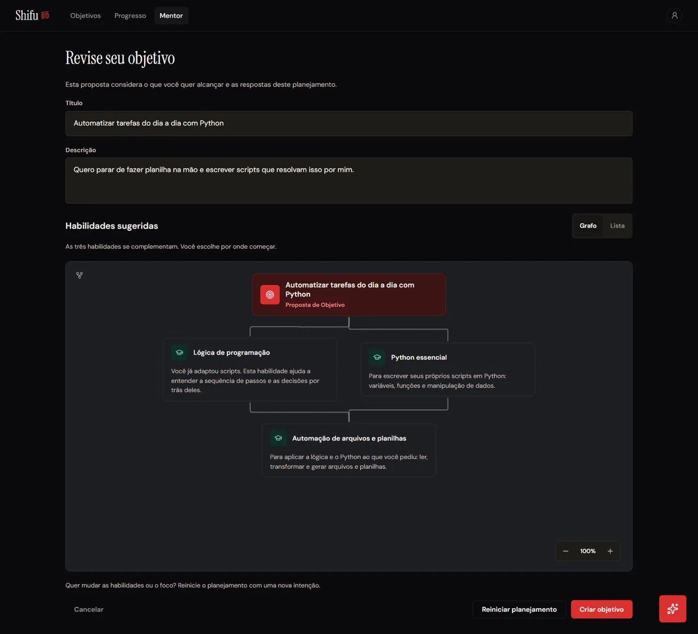

Telas que eu desenhei e implementei
Sobre o projeto
Problema
Quem quer aprender uma habilidade nova se perde entre conteúdos soltos, sem saber por onde começar nem como medir a evolução. A GSW pediu um mentor que identifique o nível de partida, monte uma jornada personalizada, ofereça prática com correção e meça o progresso, usando IA de forma consciente e continuando útil mesmo quando a IA estiver fora do ar.
Solução
Uma plataforma web com diagnóstico por habilidade, trilha de competências com materiais e atividades, inclusive de código executado no navegador, avaliação por rubrica e recomendação da próxima atividade sem depender de IA. Por cima disso, um mentor conversacional e um planejador de objetivos que combina PLN próprio com modelos de linguagem, além de XP, níveis e sequências.
Minhas contribuições
- Design system e telasDireção de marca, tokens com contraste AA verificado, biblioteca de componentes e o design de todas as telas do produto, além do README.design.md
- Material de apoioEndpoint, rota web e leitura dos materiais oficiais de cada competência, com teste de navegador.PR #10
- Experiência da habilidadeProgresso por competência, foco atual e recomendação do próximo passo para o estudante.PR #15
- PLN do PlanejadorClassificação de intenção e busca híbrida de habilidades com spaCy, TF-IDF e embeddings no pgvector, fundidos por RRF. A avaliação chegou a MRR de 0,83 e Recall@5 de 1,0.PR #31
- Back-end do PlanejadorSessão de planejamento no Redis com controle de concorrência, seis endpoints e um workflow com agentes de entrevista e de proposta que se corrigem até três vezes.PR #32
- Entrevista do PlanejadorUma pergunta por etapa, estados de processamento e saídas para pedidos fora do escopo e falhas, conferida contra 24 frames do design.PR #34
- Revisão da propostaGrafo de habilidades com React Flow e layout automático, visão em lista e edição de título e descrição.PR #35
- Criação do objetivoConfirmação idempotente em uma única transação, protegida contra cliques duplicados e conteúdo divergente.PR #36
Habilidades desenvolvidas
Hard skills · nível ao fim da API
Soft skills
- Revisão criteriosaRevisões com bloqueios e sugestões ligados aos requisitos, como nos PRs #2 e #5.
- OrganizaçãoEntreguei o Planejador em cinco PRs encadeados, cada um com estado e limitações registrados.
- DocumentaçãoEspecificação, avaliação e handoff para cada funcionalidade entregue.
- IniciativaO design system que criei virou a base visual usada por todo o time.
Tecnologias utilizadas
O que levo desta API. Aqui juntei tudo: do design à IA, entregando um fluxo inteiro e medindo a qualidade da busca com métricas, não com impressão.